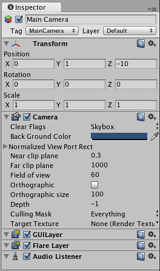

The GameObject-Component Relationship
As described previously in GameObjects, a GameObject contains Components. We'll explore this relationship by discussing a GameObject and its most common Component -- the Transform Component. With any Unity Scene open, create a new GameObject (using on Windows or on Mac), select it and take a look at the Inspector.

The Inspector of an Empty GameObject
Notice that an empty GameObject still contains a Name, a Tag, and a Layer. Every GameObject also contains a Transform Component.
The Transform Component
It is impossible to create a GameObject in Unity without a Transform Component. The Transform Component is one of the most important Components, since all of the GameObject's Transform properties are enabled by its use of this Component. It defines the GameObject's position, rotation, and scale in the game world/Scene View. If a GameObject did not have a Transform Component, it would be nothing more than some information in the computer's memory. It effectively would not exist in the world.
The Transform Component also enables a concept called Parenting, which is utilized through the Unity Editor and is a critical part of working with GameObjects. To learn more about the Transform Component and Parenting, read the Transform Component Reference page.
Other Components
The Transform Component is critical to all GameObjects, so each GameObject has one. But GameObjects can contain other Components as well.

The Main Camera, added to each scene by default
The Main Camera, added to each scene by default
Looking at the Main Camera GameObject, you can see that it contains a different collection of Components. Specifically, a Camera Component, a GUILayer, a Flare Layer, and an Audio Listener. All of these Components provide additional functionality to the GameObject. Without them, there would be nothing rendering the graphics of the game for the person playing! Rigidbodies, Colliders, Particles, and Audio are all different Components (or combinations of Components) that can be added to any given GameObject.
Page last updated: 2012-08-13